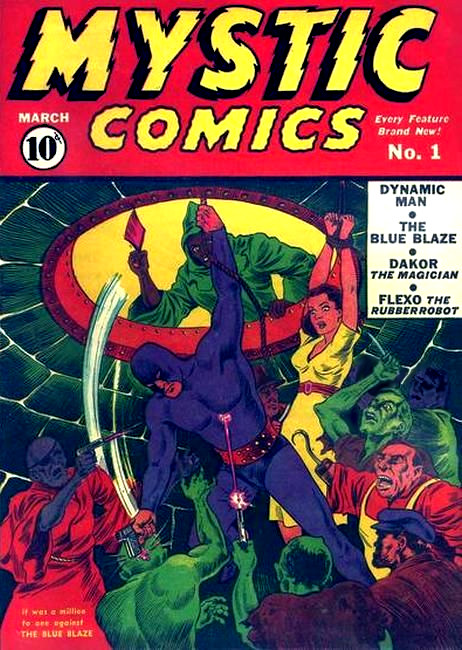
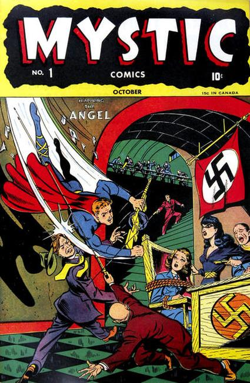
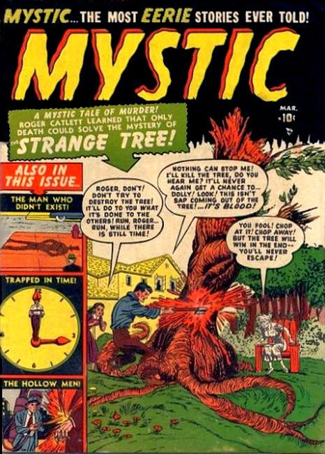

Series: 10 issues 1940. 4 issues 1944. 61 issues 1951-1957
1940 Series by Timely, issue #1: Cover art by Alex Schomburg.
- Introducing Flexo the Rubber Man, script by Will Harr, pencils by Jack Binder, inks by Jack Binder and E.C. Stoner; Brothers Joel and Joshua Williams use their creation Flexo for the first time to thwart a mad scientist who tries to steal radium from a hospital.
- The Origin of the Blue Blaze, script and art by Harry Douglas; Spencer Keen gains strength and durability after a death-like hibernation caused by a mysterious blue blaze his father had been studying.
- Journey to Cygni, script by Joe Cal Cagno, art by Fred Schwartz; Zephyr and Corky try again to reach Mars but are forced by a stowaway professor and his daughter to journey to the star Cygni instead.
- The Green Terror, script by Robert O. Erisman, art by Newt Alfred; The Green Terror, a mysterious organization, is kidnapping young, healthy men and women.
- Tough Hombre text story by Leo Stalnaker.
- The Deep Sea Demon, script by Norman Daniels, art by Fred Guardineer; Dave Dean searches for pearls but finds a mysterious demon guarding the waters.
- The Blooded Ruby of Chung; For a fee of $50,000, Dakor locates a sacred ruby stolen from a banker and returns it to the idol from which it originally came.
- The Origin of Dynamic Man, art by Daniel Peters; Professor Goettler creates Dynamic Man, a perfect man, but dies of a heart attack as his creation is born.

1944 Series by Marvel, issue #1: World War II era bondage art cover by Syd Shores.
- The Angel stars in "The Legend of the Murderous Falcon!"
- Human Torch in "The Mechanical Mole."
- The Destroyer in "Jap Juggernaut."
- Tommy Tyme "Citizens of Ancient Rome" by Charles Tomsey.
- Terry Vance, the School Boy Sleuth in "Mystery at the Crane Mansion".

1951 Series by Atlas: SciFi Horror anthology. It was launched along with Strange Tales (Marvel, 1951 series), increasing Atlas's SF line from four to six books. This book ran until the collapse of Atlas's distributor and the subsequent restructuring known as the "Atlas Implosion".
Issue #1:
- "The Man Who Vanished", art by Manny Stallman. An eight foot tall circus freak drinks a shrinking potion that continues to shrink him until he disappears.
- "The Strange Tree!" A man buys a house with a tree out in the yard which possesses people.
- The New England Horror text story.
- "Trapped in Time!" A man travels forward in time and finds that dinosaurs have again returned when man has destroyed himself through nuclear war.
- "The Hollow Men" by Mike Sekowsky. A reporter finds a scientist dead in a castle when the robot he created rebelled against him.